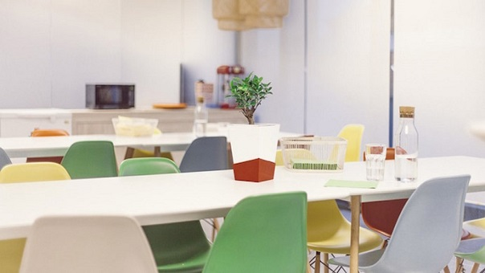

kivi, la maceta inteligente que cuida plantas

Fue desarrollado por la puesta en marcha de la isla de Kibu Green y el uso de cuidar y controlar la salud de sus plantas desde su teléfono móvil.
Hace poco conociste a Tertill, un robot que funciona con energía solar y cuida de tus plantas , detectando y acabando con las hierbas de tu jardín. Y ahora, es bueno mostrarte un objeto en el que además de una tecnología y la naturaleza, se ha cuidado del diseño.
Se Trata de Kivi, Una maceta Tecnológica Creada por la puesta en marcha española Kibu Green , Que se ocupará de tus plantas Cuando Tú No Estás, Algo que en Epoca de Vacaciones te vendria Mejor Que Nunca. ¿Quien regará tus plantas cuando esté lejos de casa? Ahora la respuesta está clara.
Gracias a esta maceta inteligente, sus plantas reciben la cantidad de agua acordada en su ausencia y no sólo eso, por lo que te notificarán, a través del teléfono móvil, cuándo necesitas un cuidado adicional para que puedas dar la orden a la maceta de que suministre una cantidad adicional de agua
También, a través de la aplicación creada para la aleta tal, con Kivi que cuelga tanto de estado de sus plantas, ya flores de sean, frutales de los árboles de los pequeños, hortalizas, etc. Además de probetas de agua, también indica sus necesidades de luz humedad
Por otro lado, a través de la aplicación tendrás acceso a trucos e información acerca de cómo cuidarlas mejor , para que las conviertas en todo un experto en jardinería. Y si eres de los que se preocupan por el medio ambiente, no hay problema, porque Kivi es eficiente con el agua y riega sus plantas con la cantidad justa que esstas necesita.
Sus fundadores destacan que el proyecto persigue convertir una maceta inteligente en un fiel consejero que haga las mejores recomendaciones , y que interactúe con el usuario.
La maceta utiliza baterías recargables de larga duración , que se cargan a través de USB. Y aunque de momento se trata de un prototipo , se espera que pueda estar muy pronto en el mercado.